Objects & Events
You know how to create beautiful maps, but you want to make it be alive by adding NPCs, treasures, etc. These elements are called objects. These objects will also react to events (hero action, chronometer, attack, etc.). Objects and events are here to galvanize your maps and create your game stories!
Events
/!\ Events in RPG Paper Maker are a different notion than in RM classic series.
You can access to events in Systems manager > Events / States.
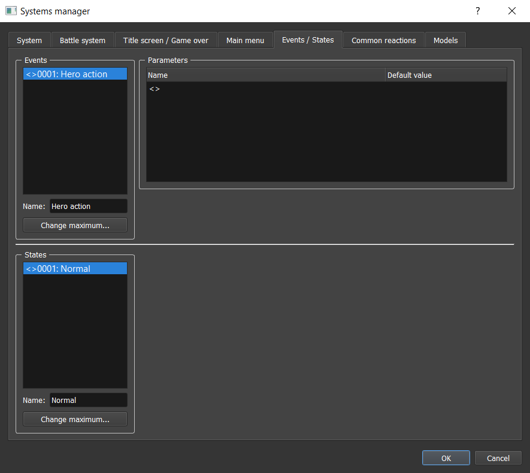
Events represent the fact that something important just happened and the objects in the map can react or not to it. An event can be for example the fact that your hero pressed the action button, or even the fact that a rain tempest just started. These events are sent to objects by other objects. There are two types of events:
- System events (time, keyboard pressure, etc.) that are not sent by objects in the map, but by the game system itself.
- User events (quest completed, sword hit) that you can be created by yourself and sent thanks to local objects.
An event also takes some parameters. For example, if you want to play a sound each three seconds in the background, you can use the time event with the parameter time = 3000 (milliseconds) and repeat = ON. Imagine such amazing things you can do with parameters (a sword hit event taking a power parameter for example). You can choose the default value of a parameter when editing parameters of an event.
/!\ Don't confuse physics and events. You should not use events for wind animations or gravity, etc.
Reactions
Reactions are a tree of commands that will be executed one by one. For example a command can be to display text on screen or to move specific objects in the map. Here is an example of reaction:
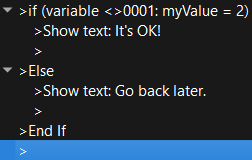
This reaction will check if the variable myValue is equal to 2. If it's OK, this will display the message "It's OK!". If not, this will display the message "Go back later.".
To edit / add a new command in a reaction, Double click on a corresponding node. This will open this window containing a large list of commands:
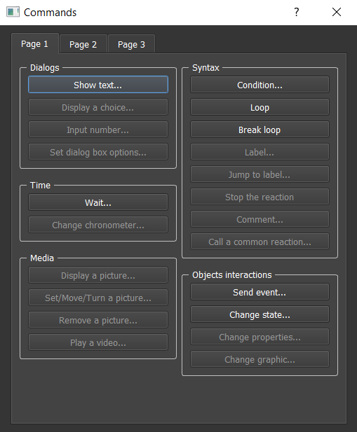
We will see later all these commands details one by one.
There is also a way to find your commands faster with keyboard search:
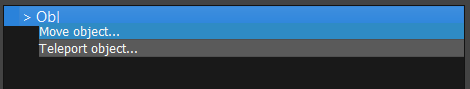
You can also copy / paste / delete by Right-clicking on the corresponding command node.
Common reactions
If you see that you are often copying the same set of commands a lot of time maybe you should consider creating a common reaction. You can access to these in Systems manager > Common reactions.

This way you will be able to call this common reaction instead of always copying it. It's even taking parameters if you have some variations in your reaction.
Block hero when reaction: If checked, the hero will not be able to move until the reaction is finished.
Objects
An object is something that can move or/and react to some events in a map. So basically a tree is not an object (except if you can cut it so it would have a reaction to an axe hit) but only a static element. It can be a NPC, a monster, or anything else. Note that your hero is an object itself so you can perfectly program its reactions.
To add an object in a map, select the Object map editor section. Point on a map square and Double click or press Enter after clicking on the square. This will open a new window.
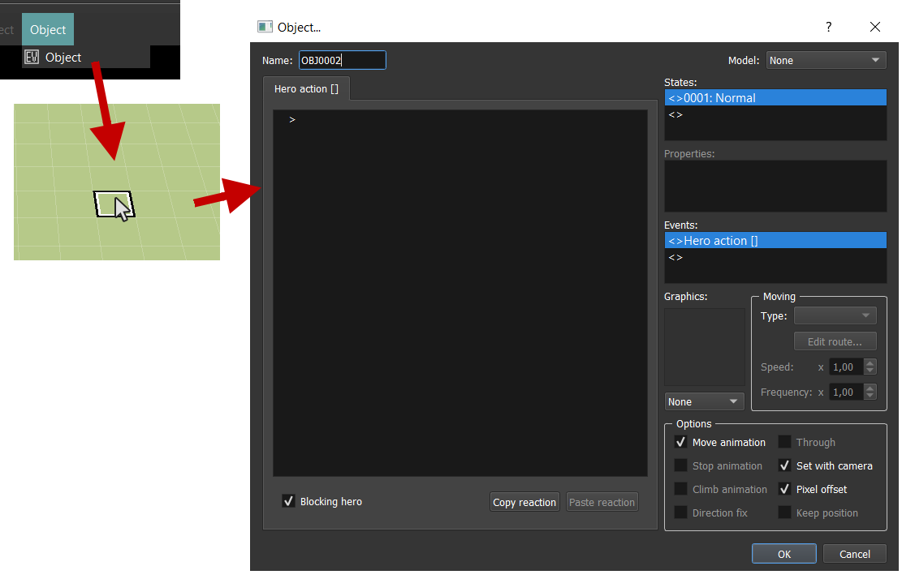
Name: Choose a name for your objects. This can help later if you want to execute actions on this object externally.Only one event per frame: We will see what are events, if checked the object will have only one reaction per frame and not several in the same time.Model: Choose a model for this object. We will see later how to configure models.
Events
You can configure which event the object can react to in the Events section. Double click on a node:

You can select if you want a user or system event and change parameters value:

System events are the following:
Time: Event sent when time interval is cleared.- Interval (default: 0): Time to wait in milliseconds.
- Repeat (default: ON): Send the event after each interval or once.
Chronometer: Not available yet.KeyPress: Event sent when pressing a key on keyboard.- ID (default: anything): The ID of the key.
- Repeat (default: OFF): If ON, this event will be sent as long as you press the key with a small offset at the first pressure.
- Immediate repeat (default: OFF): If ON, this event will be sent as long as you press the key without any offset.
KeyRelease: Event sent when releasing a key on keyboard.- ID (default: anything): The ID of the key.
States
An object has a set of States. For example, the hero can be in a normal state, or poisoned / vulnerable. Note that an object can be in several states at the same time.
You can add a new state on this list. There also is a Update complete list... button if you want to create new common states.

For each state, you have to choose different reactions to specific events. You can copy / paste reactions through states by using Copy reaction and Paste reaction buttons. These different options are also available for each state:
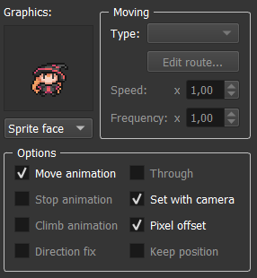
Graphics: Select the object graphics here (character picture). Choose below the kind of element (Sprite etc.).-
Moving: Options linked to the object moves when there is no reaction.Type: The type of moving.Fix: The object will not move at all.Random: The object will move randomly in the map.Route: The object will loop on a route that you can edit with theEdit route...button. Check out move object command documentation here that is exactly the same.
Speed: The speed value when the object is moving that increases/decreases the traveled distance for the same time.Freq: The frequency value when the object is moving that increases/decreases the number of animation frames displayed for the same time.
NOTE: You can edit speed and frequency list in
Systems manager > System: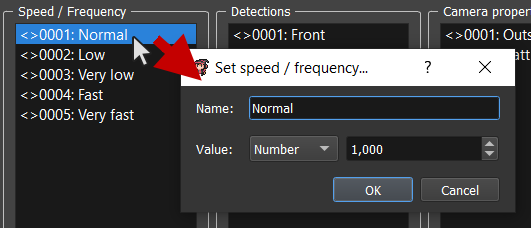
Name: The name of the speed / frequency.Value: The value of the speed / frequency (can only be a number).
-
Move animation: If checked, all the frames of the character will be drawn for move animation. If not, this will only draw the first frame of the character animation. Stop animation: (not available yet) If checked, all the frames of the character will be drawn for stopped animation. If not, this will only draw the first frame of the character animation.Climb animation: (not available yet) If checked, all the frames of the character will be drawn for climbing animation. If not, this will only draw the first frame of the character animation.Direction fix: (not available yet) If checked, the graphics will not change direction to look at the hero. If not, it will look at the hero.Set with camera: If checked, the graphics will update orientation according to the camera orientation. If not, the camera orientation changes nothing.Pixel offset: If checked, the move animation will go 1px down after two frames. This adds an interesting effect.Keep position: (not available yet) If checked, the object always keep its position after moving, even after loading save or changing map. If not, the object position is reinitialized after loading save or changing map.
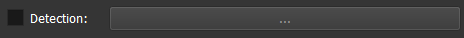
Detection: A detection to select for sending an event each frames.
Properties
The object also has a set of properties. It can be HPs, age, gender, etc. It all depends on what you need and your type of game.
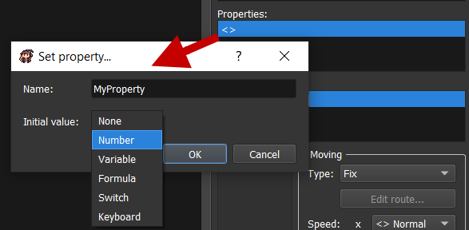
Name: The property name.Initial value: The initial value of the property when the object is loaded for the first time.
Example: create a chest
Here is a simple way to produce a chest:
- Be sure to have a state for the chest in the systems manager when it is opened:
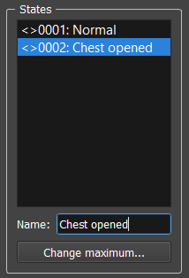
- Complete reactions for each state and don't forget to replace state at the end of the normal state:


Edit / Copy / Paste / Delete an existing object
You can open a context menu by Right clicking on an object:
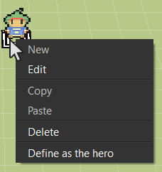
Models
Models are objects that can be commonly used. You can have models list in Systems manager > Models.

For example, if you want to add flowers that can be picked in your maps, you can create a model "Flower", and use this model for an empty object in your map:
- Create model:

- Use model flower for a map object:
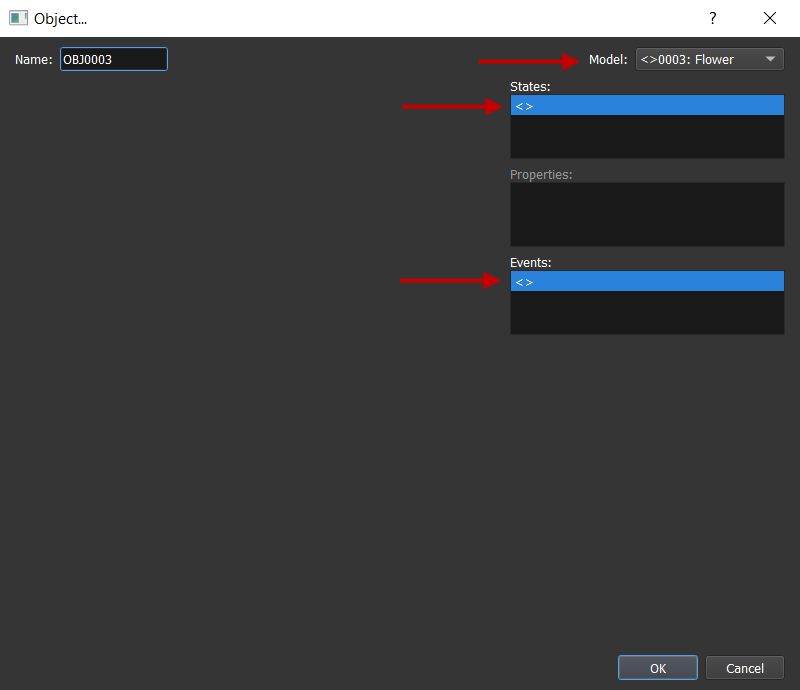
Default model
The model with ID 1 is the default model when you create a new object. You can change here the default informations to have in an object creation.
Hero model
The hero is also an object and reacts to a lot of systems events:
KeyPress > Up, Down, Left, Right Hero: Move the object hero to the pressed directions thanks to move object command.KeyPress > Left, Right Camera: Change the camera orientation thanks to move camera command.KeyPress > Action: Send the custom eventHeroActionto the facing square objects thanks to the send event command.KeyPress > MainMenu: Open the main menu thanks to the open main menu command.
Inheritance
If an object uses a model but also has content, this new content will replace some of the model content. Models themselves can have models.
- State: If there is a state with the same ID, the model reactions for this state ID will be replaced by the current content.
- Property: If there is a property with the same name, the model reactions for this property name will be replaced by the current content.
- Event: This has no influence.
Map startup reactions
In map properties, you can see this section:

This simply is an invisible object that will be usefull for cinematics when entering a new map, for example. This is invisible, so there are no state graphics. By default, it is reacting to the event Time with 0 for interval parameter and OFF for repeat parameter. That means that these reactions will be excecuted in high priority when entering the map. This can be used for cinematics and some other stuff.
Detections
It is important to use detections with objects. In fact, you are already using it when you react to Hero Action event. Hero Action event is an event that is sent by the hero itself to the objects that are in front of him. In order to determine where the events are sent, we use what we call detections.
You can access to detections list in Systems manager > System:
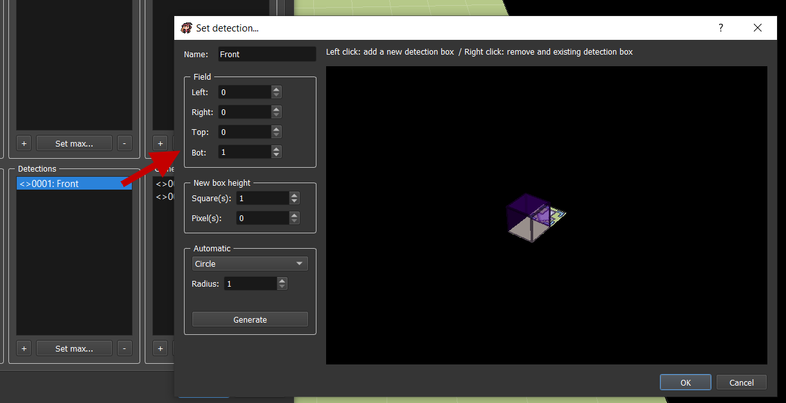
And here is the front detection! You clearly see here that your event can be sent in front. There is an arrow indicating the square position of the object sending the event, and also the orientation. You can add detection boxes by using left click and right click to delete existing detection boxes.
Name: The detection name.Field: The detection field that you can increase/decrease.Left: Number of squares on the left side of the object sending the event.Right: Number of squares on the right side of the object sending the event.Top: Number of squares on the top side of the object sending the event.Bot: Number of squares on the bot side of the object sending the event.
New box height: The height that will be applied on the next boxes.Square(s): Number of squares for detection box height.Pixel(s): Number of pixels in addition for detection box height.
Automatic: A way to automaticaly generate detection boxes adding.Circle: Draw a circle with givenradius.Rectangle: Draw a rectangle with givenlengthandwidth.Generate: Clicking on this button will generate the selected form and options.